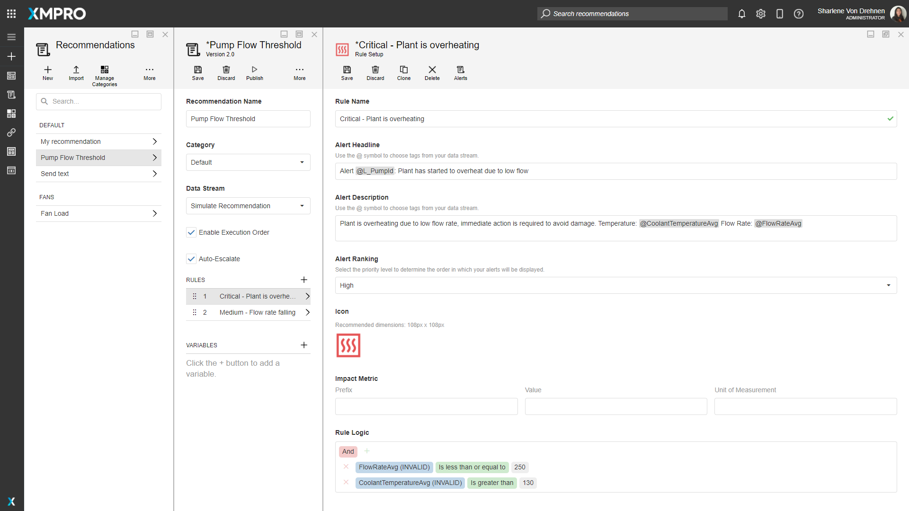
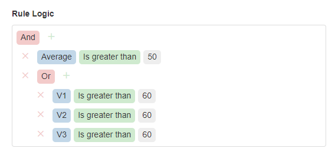
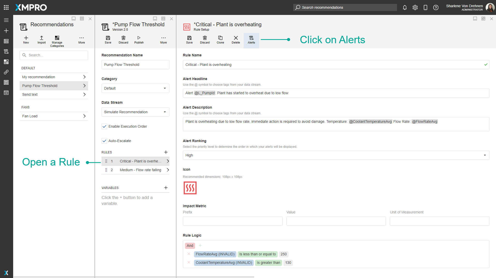
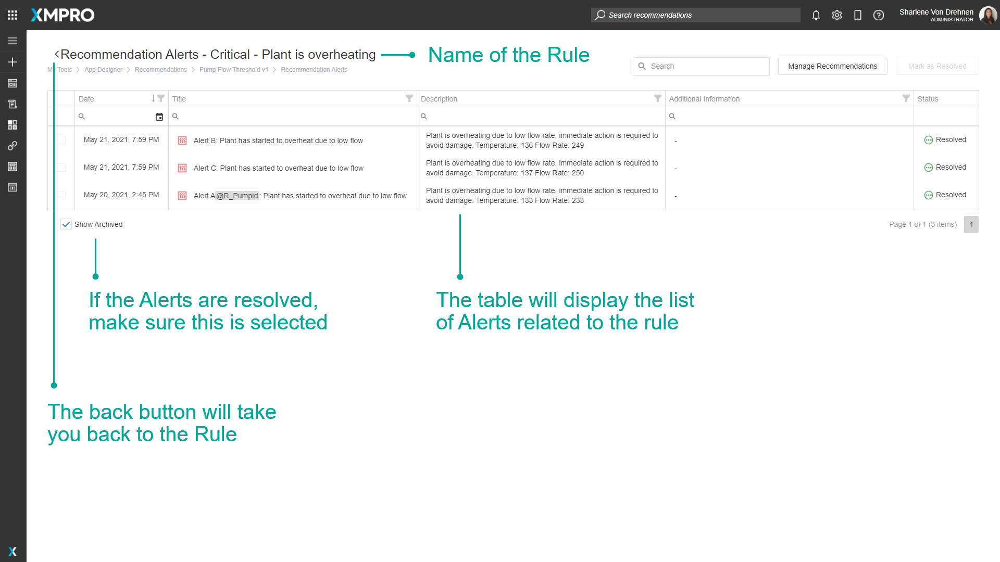

Rule
A Rule defines the conditions for triggering a Recommendation Alert and what the created Recommendation Alert should look like. Multiple Rules can also be grouped into one Recommendation.

Rule Logic
Data sent from the selected Data Stream is passed through the Rule Logic and if the conditions created are met by the data, a new Recommendation Alert will be created.
You can add new conditions or groups by clicking the + button. Groups can be nested within each other to create advanced logic. In an "And" group, all the conditions must be true, and in an "Or" group, only one of the conditions must be true to trigger an Alert.
As an example, in the following Rule Logic, both of the following must be true to trigger an Alert:
- Average must be greater than 50,
- And V1, V2, or V3 must be greater than 60.

Alert Headline & Description
This refers to the headline and description that the Recommendation Alert will be created with. Any tag (starting with @) will be replaced with the value output from the Data Stream.
Alert Ranking
The priority level that the Recommendation Alert will be created with. Priority level determines the order in which the Alerts will be displayed.
Impact Metric
The measurable impact of the business event detected by the Recommendation Rule. This will be shown on Alerts in the Recommendation Block in App Pages.
Enable Form
A flag that determines whether the Recommendation Alert will be created with a Form.
Select Form
The Form that the Recommendation Alert will be created with.
Form Version
The Version of the Form that the Recommendation Alert will be created with.
Additional Recommendation Management Column
An additional column in the Recommendation Alerts grid. Any tag (starting with @) will be replaced with the value entered in the corresponding field in the Form.
Resolution
Resolution determines whether new data from the Data Stream will automatically resolve the Recommendation Alert if the Rule Logic is no longer true.
Manual Resolution: A user must manually resolve each Recommendation.
Automatic Resolution: Recommendation auto resolves when trigger conditions are no longer true. This may impact performance, as it might continuously trigger and resolve a large number of Recommendations at a time if the data fluctuates frequently.
Recurrence
Recurrence determines whether new data from the Data Stream will create new Recommendation Alerts if a Pending Recommendation Alert already exists and the Rule Logic is true.
If the conditions created by the Rule Logic are met by the data, and if Recurrence is set to All Occurrences or First Occurrence and no Pending Alert exists, a new Recommendation Alert will be created.
First Occurrence: The current recommendation must be resolved before others can be triggered for the same rule.
All Occurrences: A new recommendation will be triggered every time the rule conditions are true.
Recurrence will be disabled and be considered to be the First Occurrence if the Recommendation has Execution Order enabled.
Log Data On
Determines whether new data from the Data Stream will log new data in the Event Data grid if the Rule Logic is true.
First Occurrence: Current recommendation will only log data on the first occurrence.
All Occurrences: New alert data will be triggered every time the rule conditions are true.
Triage Instructions
Instructions to help whoever is resolving the Recommendation Alert.
Enable Triage Instructions is a flag that determines whether the Recommendation Alert will be created with Triage Instructions.
Resources
A list of links on the Recommendation Alert to help whoever is resolving the Recommendation Alert.
Enable Resources is a flag that determines whether the Recommendation Alert will be created with Resources.
Notifications
This refers to the list of Notifications that will be sent out to everyone who is subscribed.
View Related Alerts
You can view Alerts that are directly related to a Rule. To do this, open the Rule's page and click on Alerts at the top. This will take you directly to the Alerts list table, which will be filtered to only display the Alerts related to the specific rule you are viewing.


Actions on the Rule
| Action | Description |
|---|---|
| Save | Saves any changes made to the Rule up to this point. |
| Discard | Discards any changes made to the Rule up to this point. |
| Clone | Clones the Rule as a new Rule in this Recommendation. |
| Delete | Deletes the Rule from this Recommendation. |
Further Reading
Last modified: May 29, 2025